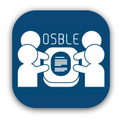
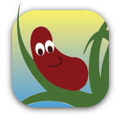
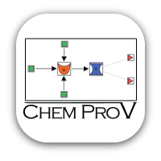
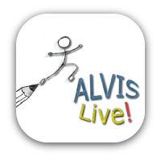
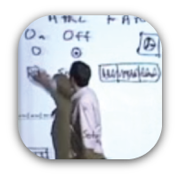

Funding source: NSF CPATH Class I (no. 0721927) and Class II (no. 0939017)
OSBLE
Project team:Chris Hundhausen, Pawan Agarwal, Adam Carter, Kay McCracken, Mick Barretto
Overview: For the past decade, we have been exploring the potential for the studio-based learning (SBL) approach commonly used in architecture and fine arts education to be adapted for computing education. To support SBL, we have been developing the Online Studio-Based Learning Environment (OSBLE), a lightweight course management system with powerful and flexible features to support SBL, including team assignments, iterative peer review, and peer review assessment.

Funding source: NSF BPC (no. 0940521)
Blind Programming Project
Project team:Andy Stefik (Southern Illinois University Edwardsville), Chris Hundhausen, Sarah Hawkinson, Jason Neufeld
Overview:To provide the blind and visually-impaired with a way in to computer programming, we are developing a new educational infrastructure consisting of (a) an auditory programming environment called Sodbeans, (b) a computing curriculum rooted in Sodbeans, and (c) web-based community support portal. We are partnering with five schools for the blind to integrate this educational infrastructure into their curricula.

Funding source: NSF DLR (no. 0530708), NSF CCLI Phase I (no. 0837828)
ChemProV
Project team:Dick Zollars, Chris Hundhausen, Adam Carter, Pawan Agarwal, Simon Gordon
Overview: The Chemical Process Visualizer (ChemProV) is an educational software environment that supports the construction of process flow diagrams and corresponding material balance equations. As students work, ChemProV generates dynamic feedback messages that alert students to errors in their diagrams and equations, and provide hints on how the errors can be addressed.

Funding source: NSF CAREER (no. 0133212 & 0406485), NSF DUE (no. 0530708), NSF CPATH Class I (no. 0721927)
ALVIS
Project team:Jon Brown, Sean Farley, Cole Nevins, Chris Hundhausen
Overview: ALVIS is a novice programming environment with a rich design evolution. Originally targeted for use in a third-year undergraduate algorithms course, ALVIS has since been redesigned specifically for introductory programming students. The modern version of ALVIS (“ALVIS Live!”) supports two key innovations: (a) a dual-representation direct manipulation programming environment; and (b) up-to-the-keystroke semantic feedback in the form of visualizations of program variables and data structures.

Funding source: Hewlett Packard Technology for Teaching Award (no. U06TFH0033E), NSF CPATH Class I (no. 0721927)
Prototype walkthrough
Project team:Chris Hundhausen, Dana Fairbrother, Marian Petre (Open University, U.K.)
Overview: In an undergraduate HCI course, we have been exploring a studio-based learning activity called the prototype walkthrough, in which a student project group simulates its evolving user interface prototype while a student audience member acts as a test user. The audience is encouraged to ask questions and provide feedback. We are performing a content analysis of a video corpus of prototype walkthroughs supported by two alternative forms of prototyping technology: simple art supplies and a computer-based low fidelity prototyping tool.
WOZ Pro
Project team:Anzor Balkar, Mohamed Nuur, Steve Trent, Chris Hundhausen
Overview: WOZ Pro (Wizard of Oz Prototyper) is a pen-based software environment that supports the quick and easy creation and testing of low fidelity user interface prototypes. WOZ Pro is designed to be as easy to use as pen-and-paper, but to hold key advantages over pen-and-paper and existing computer-based tools. When designing interface screens in WOZ Pro, designers can easily (a) propagate a design change to other related screens, and (b) specify the set of screens that are reachable from a given screen. In a wizard of oz test, WOZ Pro reduces the cognitive load on the wizard by allowing navigation only to those next screens that are valid.